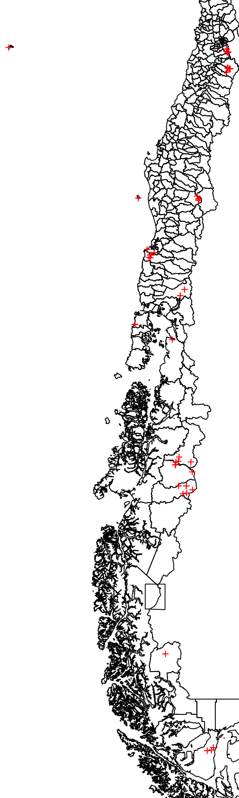
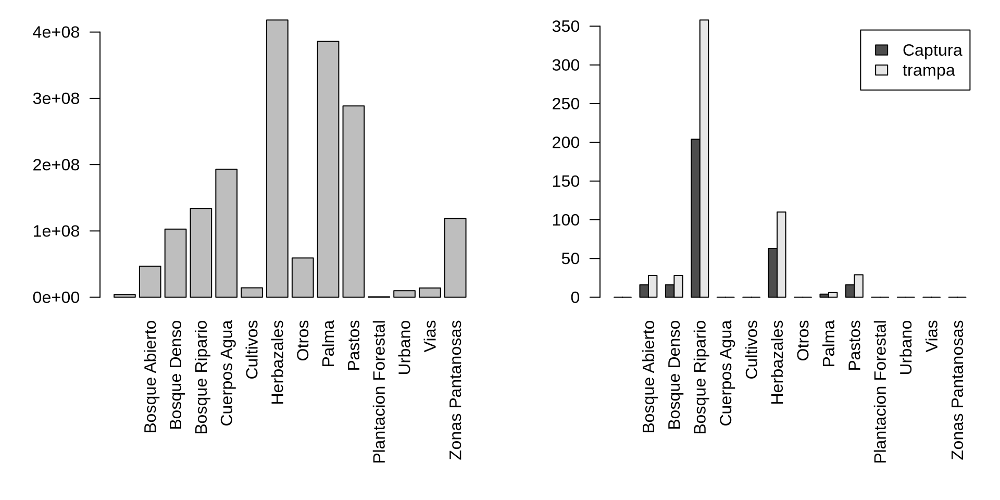

Manejar datos espaciales en R y SQL
Conectar Qgis a la base de datos (ver https://mappinggis.com/2023/01/como-conectar-qgis-a-postgis/).
Abrir la consola en Qgis:
“Base de datos” > “DB Manager” > Abrir la base de datos en el panel de la Izquierda >
Entrar el código siguiente:
SELECT cd_event, cd_gp_biol, pt_geom
FROM main.event e
LEFT JOIN main.gp_event ge USING (cd_gp_event);“Ejecutar”
“Cargar como una nueva capa” > “Columna con valores unicos”: cd_event > “Columna de geometría”: pt_geom > “Cargar”
En Qgis, ir a la nueva capa que proviene de Qgis y hacer un click derecho > “Propiedades” > “Simbología”
Cambiar “Simbolos unicos” por “Categorizado”
En valores: cd_gp_biol
Hacer click en “Clasificar” y “OK”
Utilizamos una carpeta temporaria para extraer las occurrencias desde el archivo comprimido (ver actividad de estándares)
if(!dir.exists("../Datos/tmp"))
{dir.create("../Datos/tmp")}
unzip("../Datos/dwca-fotomonitoreo_conaf_2021-v1.9.zip",files = c("occurrence.txt"), exdir = "../Datos/tmp", overwrite = T)El shapefile de las comunas está también en un archivo comprimido, extraemos todos los archivos en la carpeta temporaria
unzip("../Datos/Comunas.zip",exdir = "../Datos/tmp/",overwrite = T)Cargar el archivo de occurrencia en R:
occuFotoTrampeo<-read.csv("../Datos/tmp/occurrence.txt",sep="\t")Para este ejercicio, vamos a utilizar solo 50 filas aleatorias del archivo (¡son procesos pesados, con 50 filas es más rapido!). Pero no duden en suprimir esta fila si quieren aplicar el tratamiento al archivo entero en sus computadores!
Para explicar el principio del codigo previo:
[1] 42 45 20 43 2 12 27 15 14 6 46 16 19 22 25 1 3 44 34 49 41 35
[23] 9 18 38 40 17 31 29 48 23 11 50 13 36 5 32 39 47 30 24 7 21 10
[45] 33 26 4 28 37 8En R, utilizamos una clase particular de objetos, definida en el paquete sf, para manejar los atributos espaciales.
La función st_as_sf permite definir cuales son las columnas de una tabla que contienen las coordenadas de puntos, y así transformar la tabla en un objeto espacial.
Afectamos el sistema de proyección WGS84, gracias al SRID (Spatial Reference IDentifier). Pueden utilizar el sitio web https://epsg.io/ para encontrar los sistemas de referencia y sus identificadores.
st_crs(spat_occuFotoTrampeo)<-"EPSG:4326"Siendo un shapefile, el archivo se lee directamente como un archivo espacial, gracias a la función st_read.
La función utiliza la noción de “dsn” que es el objeto que contiene las capas (acá la carpeta que contiene el shapefile, pero puede ser una base de datos espacial, una geodatabase de ESRI etc.), y los “layers” que son cada una de las capas:
comunas<-st_read(dsn = "../Datos/tmp/",layer="comunas")Reading layer `comunas' from data source
`/home/marius/Travail/Enseignement/2023_cursoBiodiversidadChile/2024/Datos/tmp'
using driver `ESRI Shapefile'
Simple feature collection with 346 features and 11 fields
Geometry type: MULTIPOLYGON
Dimension: XY
Bounding box: xmin: -12184470 ymin: -7554436 xmax: -7393642 ymax: -1978920
Projected CRS: WGS 84 / Pseudo-MercatorPara poder hacer un tratamiento espacial con las occurrencias y las comunas, tenemos que asegurarnos que los objetos están en el mismo sistema de proyección:
spat_occuFotoTrampeo<-st_transform(spat_occuFotoTrampeo,st_crs(comunas))Mirar la estructura de los objetos espaciales
spat_occuFotoTrampeoSimple feature collection with 50 features and 55 fields
Geometry type: POINT
Dimension: XY
Bounding box: xmin: -8787969 ymin: -7022447 xmax: -7830540 ymax: -3985424
Projected CRS: WGS 84 / Pseudo-Mercator
First 10 features:
id type
413245 CONAF:Fotomonitoreo:PNVPR:2022:AN45:632 Fototrampeo
250955 CONAF:Fotomonitoreo:RNMAG:2022:CP18:16187 Fototrampeo
536725 CONAF:Fotomonitoreo:PNP:2019:BB28:10814 Fototrampeo
393015 CONAF:Fotomonitoreo:PNCH:2021:M01:8073 Fototrampeo
564579 CONAF:Fotomonitoreo:PNCC:2022:H23:11493 Fototrampeo
591758 CONAF:Fotomonitoreo:PNRCL:2018:B7:395 Fototrampeo
534315 CONAF:Fotomonitoreo:PNP:2019:BT19:25590 Fototrampeo
375249 CONAF:Fotomonitoreo:RNM:2021:F07:3241 Fototrampeo
506322 CONAF:Fotomonitoreo:RNM:2021:O26:11251 Fototrampeo
107656 CONAF:Fotomonitoreo:RNRC:2017:I08:1332 Fototrampeo
modified language
413245 2023-12-06 es
250955 2023-12-06 es
536725 2023-12-06 es
393015 2023-12-06 es
564579 2023-12-06 es
591758 2023-12-06 es
534315 2023-12-06 es
375249 2023-12-06 es
506322 2023-12-06 es
107656 2023-12-06 es
license
413245 https://creativecommons.org/licenses/by-nc/4.0/legalcode
250955 https://creativecommons.org/licenses/by-nc/4.0/legalcode
536725 https://creativecommons.org/licenses/by-nc/4.0/legalcode
393015 https://creativecommons.org/licenses/by-nc/4.0/legalcode
564579 https://creativecommons.org/licenses/by-nc/4.0/legalcode
591758 https://creativecommons.org/licenses/by-nc/4.0/legalcode
534315 https://creativecommons.org/licenses/by-nc/4.0/legalcode
375249 https://creativecommons.org/licenses/by-nc/4.0/legalcode
506322 https://creativecommons.org/licenses/by-nc/4.0/legalcode
107656 https://creativecommons.org/licenses/by-nc/4.0/legalcode
rightsHolder
413245 Corporación Nacional Forestal (CONAF)
250955 Centro de Ecología Aplicada y Sustentabilidad (CAPES)
536725 Corporación Nacional Forestal (CONAF)
393015 Corporación Nacional Forestal (CONAF)
564579 Corporación Nacional Forestal (CONAF)
591758 Corporación Nacional Forestal (CONAF)
534315 Corporación Nacional Forestal (CONAF)
375249 Corporación Nacional Forestal (CONAF)
506322 Corporación Nacional Forestal (CONAF)
107656 Corporación Nacional Forestal (CONAF)
bibliographicCitation
413245 Corporación Nacional Forestal (CONAF). 2021.Fotomonitoreo de bojetos de conservación y amenazas en el Sistema Nacional de Áreas Silvestres Protegias del Estado (SNASPE). Sitio web: [www.fotomonitoreo.cl]. Corporación Nacional Forestal. Chile.
250955 Corporación Nacional Forestal (CONAF). 2021.Fotomonitoreo de bojetos de conservación y amenazas en el Sistema Nacional de Áreas Silvestres Protegias del Estado (SNASPE). Sitio web: [www.fotomonitoreo.cl]. Corporación Nacional Forestal. Chile.
536725 Corporación Nacional Forestal (CONAF). 2021.Fotomonitoreo de bojetos de conservación y amenazas en el Sistema Nacional de Áreas Silvestres Protegias del Estado (SNASPE). Sitio web: [www.fotomonitoreo.cl]. Corporación Nacional Forestal. Chile.
393015 Corporación Nacional Forestal (CONAF). 2021.Fotomonitoreo de bojetos de conservación y amenazas en el Sistema Nacional de Áreas Silvestres Protegias del Estado (SNASPE). Sitio web: [www.fotomonitoreo.cl]. Corporación Nacional Forestal. Chile.
564579 Corporación Nacional Forestal (CONAF). 2021.Fotomonitoreo de bojetos de conservación y amenazas en el Sistema Nacional de Áreas Silvestres Protegias del Estado (SNASPE). Sitio web: [www.fotomonitoreo.cl]. Corporación Nacional Forestal. Chile.
591758 Corporación Nacional Forestal (CONAF). 2021.Fotomonitoreo de bojetos de conservación y amenazas en el Sistema Nacional de Áreas Silvestres Protegias del Estado (SNASPE). Sitio web: [www.fotomonitoreo.cl]. Corporación Nacional Forestal. Chile.
534315 Corporación Nacional Forestal (CONAF). 2021.Fotomonitoreo de bojetos de conservación y amenazas en el Sistema Nacional de Áreas Silvestres Protegias del Estado (SNASPE). Sitio web: [www.fotomonitoreo.cl]. Corporación Nacional Forestal. Chile.
375249 Corporación Nacional Forestal (CONAF). 2021.Fotomonitoreo de bojetos de conservación y amenazas en el Sistema Nacional de Áreas Silvestres Protegias del Estado (SNASPE). Sitio web: [www.fotomonitoreo.cl]. Corporación Nacional Forestal. Chile.
506322 Corporación Nacional Forestal (CONAF). 2021.Fotomonitoreo de bojetos de conservación y amenazas en el Sistema Nacional de Áreas Silvestres Protegias del Estado (SNASPE). Sitio web: [www.fotomonitoreo.cl]. Corporación Nacional Forestal. Chile.
107656 Corporación Nacional Forestal (CONAF). 2021.Fotomonitoreo de bojetos de conservación y amenazas en el Sistema Nacional de Áreas Silvestres Protegias del Estado (SNASPE). Sitio web: [www.fotomonitoreo.cl]. Corporación Nacional Forestal. Chile.
institutionID collectionID
413245 CONAF CONAF:Fotomonitoreo
250955 CONAF CONAF:Fotomonitoreo
536725 CONAF CONAF:Fotomonitoreo
393015 CONAF CONAF:Fotomonitoreo
564579 CONAF CONAF:Fotomonitoreo
591758 CONAF CONAF:Fotomonitoreo
534315 CONAF CONAF:Fotomonitoreo
375249 CONAF CONAF:Fotomonitoreo
506322 CONAF CONAF:Fotomonitoreo
107656 CONAF CONAF:Fotomonitoreo
institutionCode collectionCode
413245 Corporación Nacional Forestal (CONAF) Fotomonitoreo
250955 Corporación Nacional Forestal (CONAF) Fotomonitoreo
536725 Corporación Nacional Forestal (CONAF) Fotomonitoreo
393015 Corporación Nacional Forestal (CONAF) Fotomonitoreo
564579 Corporación Nacional Forestal (CONAF) Fotomonitoreo
591758 Corporación Nacional Forestal (CONAF) Fotomonitoreo
534315 Corporación Nacional Forestal (CONAF) Fotomonitoreo
375249 Corporación Nacional Forestal (CONAF) Fotomonitoreo
506322 Corporación Nacional Forestal (CONAF) Fotomonitoreo
107656 Corporación Nacional Forestal (CONAF) Fotomonitoreo
ownerInstitutionCode basisOfRecord
413245 CONAF MachineObservation
250955 CONAF MachineObservation
536725 CONAF MachineObservation
393015 CONAF MachineObservation
564579 CONAF MachineObservation
591758 CONAF MachineObservation
534315 CONAF MachineObservation
375249 CONAF MachineObservation
506322 CONAF MachineObservation
107656 CONAF MachineObservation
occurrenceID individualCount
413245 CONAF:Fotomonitoreo:PNVPR:2022:AN45:632 1
250955 CONAF:Fotomonitoreo:RNMAG:2022:CP18:16187 1
536725 CONAF:Fotomonitoreo:PNP:2019:BB28:10814 4
393015 CONAF:Fotomonitoreo:PNCH:2021:M01:8073 1
564579 CONAF:Fotomonitoreo:PNCC:2022:H23:11493 2
591758 CONAF:Fotomonitoreo:PNRCL:2018:B7:395 1
534315 CONAF:Fotomonitoreo:PNP:2019:BT19:25590 1
375249 CONAF:Fotomonitoreo:RNM:2021:F07:3241 1
506322 CONAF:Fotomonitoreo:RNM:2021:O26:11251 1
107656 CONAF:Fotomonitoreo:RNRC:2017:I08:1332 1
sex lifeStage reproductiveCondition
413245 Indeterminado Indeterminado Indeterminado
250955 Indeterminado Indeterminado Indeterminado
536725 Indeterminado Indeterminado Indeterminado
393015 Indeterminado Indeterminado Indeterminado
564579 Indeterminado Indeterminado Indeterminado
591758 Indeterminado Indeterminado Indeterminado
534315 Indeterminado Indeterminado Indeterminado
375249 Indeterminado Indeterminado Indeterminado
506322 Indeterminado Indeterminado Indeterminado
107656 Indeterminado Indeterminado Indeterminado
establishmentMeans degreeOfEstablishment occurrenceStatus
413245 native native present
250955 introduced widespreadInvasive present
536725 introduced widespreadInvasive present
393015 native native present
564579 introduced widespreadInvasive present
591758 native native present
534315 introduced widespreadInvasive present
375249 introduced widespreadInvasive present
506322 introduced widespreadInvasive present
107656 introduced widespreadInvasive present
occurrenceRemarks eventID
413245 CONAF:Fotomonitoreo:PNVPR:2022:AN45
250955 CONAF:Fotomonitoreo:RNMAG:2022:CP18
536725 CONAF:Fotomonitoreo:PNP:2019:BB28
393015 CONAF:Fotomonitoreo:PNCH:2021:M01
564579 CONAF:Fotomonitoreo:PNCC:2022:H23
591758 CONAF:Fotomonitoreo:PNRCL:2018:B7
534315 CONAF:Fotomonitoreo:PNP:2019:BT19
375249 CONAF:Fotomonitoreo:RNM:2021:F07
506322 CONAF:Fotomonitoreo:RNM:2021:O26
107656 CONAF:Fotomonitoreo:RNRC:2017:I08
eventDate eventTime startDayOfYear endDayOfYear year month
413245 2022-01-21 22:01:34-04 300 33 2022 1
250955 2022-03-28 04:53:28-04 85 319 2022 3
536725 2019-02-27 21:05:07-04 39 143 2019 2
393015 2021-03-27 12:38:05-04 62 96 2021 3
564579 2022-01-19 06:59:16-04 12 43 2022 1
591758 2018-05-02 04:28:57-04 114 144 2018 5
534315 2019-07-27 23:55:51-04 37 225 2019 7
375249 2020-12-18 19:55:36-04 346 11 2020 12
506322 2021-02-17 08:56:02-04 36 68 2021 2
107656 2017-08-12 16:22:16-04 144 265 2017 8
day locationID continent country countryCode
413245 21 PNVPR South America Chile CL
250955 28 RNMAG South America Chile CL
536725 27 PNP South America Chile CL
393015 27 PNCH South America Chile CL
564579 19 PNCC South America Chile CL
591758 2 PNRCL South America Chile CL
534315 27 PNP South America Chile CL
375249 18 RNM South America Chile CL
506322 17 RNM South America Chile CL
107656 12 RNRC South America Chile CL
stateProvince
413245 Región de Los Lagos
250955 Región de Magallanes y de la Antártica Chilena
536725 Región de Aysén del General Carlos Ibáñez del Campo
393015 Región de Los Lagos
564579 Región de Aysén del General Carlos Ibáñez del Campo
591758 Región Metropolitana de Santiago
534315 Región de Aysén del General Carlos Ibáñez del Campo
375249 Región de La Araucanía
506322 Región de La Araucanía
107656 Región del Libertador General Bernardo O'Higgins
locality geodeticDatum
413245 Parque Nacional Vicente Pérez Rosales EPSG:4326
250955 Reserva Nacional Magallanes EPSG:4326
536725 Parque Nacional Patagonia EPSG:4326
393015 Parque Nacional Chiloé EPSG:4326
564579 Parque Nacional Cerro Castillo EPSG:4326
591758 Parque Nacional Rio Clarillo EPSG:4326
534315 Parque Nacional Patagonia EPSG:4326
375249 Reserva Nacional Malalcahuello EPSG:4326
506322 Reserva Nacional Malalcahuello EPSG:4326
107656 Reserva Nacional Rio de los Cipreses EPSG:4326
coordinateUncertaintyInMeters verbatimCoordinateSystem
413245 1000 decimal degrees
250955 1000 decimal degrees
536725 1000 decimal degrees
393015 1000 decimal degrees
564579 1000 decimal degrees
591758 1000 decimal degrees
534315 1000 decimal degrees
375249 1000 decimal degrees
506322 1000 decimal degrees
107656 1000 decimal degrees
verbatimSRS scientificName
413245 WGS 84 Dromiciops gliroides Thomas, 1894
250955 WGS 84 Canis lupus familiaris Linnaeus, 1758
536725 WGS 84 Bos taurus Linnaeus, 1758
393015 WGS 84 Pudu puda (Molina, 1782)
564579 WGS 84 Bos taurus Linnaeus, 1758
591758 WGS 84 Lycalopex culpaeus (Molina, 1782)
534315 WGS 84 Equus caballus Linnaeus, 1758
375249 WGS 84 Bos taurus Linnaeus, 1758
506322 WGS 84 Bos taurus Linnaeus, 1758
107656 WGS 84 Bos taurus Linnaeus, 1758
originalNameUsage kingdom phylum class
413245 Dromiciops gliroides Animalia Chordata Mammalia
250955 Canis lupus familiaris Animalia Chordata Mammalia
536725 Bos taurus Animalia Chordata Mammalia
393015 Pudu puda Animalia Chordata Mammalia
564579 Bos taurus Animalia Chordata Mammalia
591758 Lycalopex culpaeus Animalia Chordata Mammalia
534315 Equus caballus Animalia Chordata Mammalia
375249 Bos taurus Animalia Chordata Mammalia
506322 Bos taurus Animalia Chordata Mammalia
107656 Bos taurus Animalia Chordata Mammalia
order family genus specificEpithet
413245 Microbiotheria Microbiotheriidae Dromiciops gliroides
250955 Carnivora Canidae Canis lupus
536725 Artiodactyla Bovidae Bos taurus
393015 Artiodactyla Cervidae Pudu puda
564579 Artiodactyla Bovidae Bos taurus
591758 Carnivora Canidae Lycalopex culpaeus
534315 Perissodactyla Equidae Equus caballus
375249 Artiodactyla Bovidae Bos taurus
506322 Artiodactyla Bovidae Bos taurus
107656 Artiodactyla Bovidae Bos taurus
infraspecificEpithet taxonRank verbatimTaxonRank
413245 especie sp
250955 familiaris subespecie subsp
536725 especie sp
393015 especie sp
564579 especie sp
591758 especie sp
534315 especie sp
375249 especie sp
506322 especie sp
107656 especie sp
scientificNameAuthorship vernacularName taxonomicStatus
413245 Thomas, 1894 Monito del monte aceptado
250955 Linnaeus, 1758 Perro doméstico aceptado
536725 Linnaeus, 1758 Vaca aceptado
393015 (Molina, 1782) Pudú aceptado
564579 Linnaeus, 1758 Vaca aceptado
591758 (Molina, 1782) Zorro culpeo aceptado
534315 Linnaeus, 1758 Caballo aceptado
375249 Linnaeus, 1758 Vaca aceptado
506322 Linnaeus, 1758 Vaca aceptado
107656 Linnaeus, 1758 Vaca aceptado
geometry
413245 POINT (-8027223 -5030894)
250955 POINT (-7902468 -7009220)
536725 POINT (-8018518 -5909902)
393015 POINT (-8242496 -5181454)
564579 POINT (-8064720 -5776430)
591758 POINT (-7846269 -3992957)
534315 POINT (-7992832 -5895729)
375249 POINT (-7973042 -4627509)
506322 POINT (-7967653 -4639817)
107656 POINT (-7841380 -4072972)head(comunas)Simple feature collection with 6 features and 11 fields
Geometry type: MULTIPOLYGON
Dimension: XY
Bounding box: xmin: -8133264 ymin: -4748322 xmax: -7828105 ymax: -4017907
Projected CRS: WGS 84 / Pseudo-Mercator
objectid shape_leng dis_elec cir_sena cod_comuna codregion
1 48 170038.62 16 8 6204 6
2 29 125730.10 15 8 6102 6
3 30 63026.08 15 8 6103 6
4 31 89840.90 15 8 6104 6
5 78 122626.49 23 11 9121 9
6 79 279936.00 23 11 9103 9
st_area_sh st_length_ Region
1 968577420 206184.27 Región del Libertador Bernardo O'Higgins
2 415744636 151911.58 Región del Libertador Bernardo O'Higgins
3 144856484 76355.33 Región del Libertador Bernardo O'Higgins
4 325657168 108874.62 Región del Libertador Bernardo O'Higgins
5 699072708 156680.41 Región de La Araucanía
6 3127304688 360052.12 Región de La Araucanía
Comuna Provincia geometry
1 Marchigüe Cardenal Caro MULTIPOLYGON (((-7992819 -4...
2 Codegua Cachapoal MULTIPOLYGON (((-7831652 -4...
3 Coinco Cachapoal MULTIPOLYGON (((-7892616 -4...
4 Coltauco Cachapoal MULTIPOLYGON (((-7906458 -4...
5 Cholchol Cautín MULTIPOLYGON (((-8121756 -4...
6 Cunco Cautín MULTIPOLYGON (((-7992287 -4...La función st_join permite buscar las correspondencias espaciales entre 2 objetos y añadir las columnas de un objeto en el otro cuando hay correspondencia espacial:
(A<-st_join(spat_occuFotoTrampeo,comunas))Simple feature collection with 50 features and 66 fields
Geometry type: POINT
Dimension: XY
Bounding box: xmin: -8787969 ymin: -7022447 xmax: -7830540 ymax: -3985424
Projected CRS: WGS 84 / Pseudo-Mercator
First 10 features:
id type
413245 CONAF:Fotomonitoreo:PNVPR:2022:AN45:632 Fototrampeo
250955 CONAF:Fotomonitoreo:RNMAG:2022:CP18:16187 Fototrampeo
536725 CONAF:Fotomonitoreo:PNP:2019:BB28:10814 Fototrampeo
393015 CONAF:Fotomonitoreo:PNCH:2021:M01:8073 Fototrampeo
564579 CONAF:Fotomonitoreo:PNCC:2022:H23:11493 Fototrampeo
591758 CONAF:Fotomonitoreo:PNRCL:2018:B7:395 Fototrampeo
534315 CONAF:Fotomonitoreo:PNP:2019:BT19:25590 Fototrampeo
375249 CONAF:Fotomonitoreo:RNM:2021:F07:3241 Fototrampeo
506322 CONAF:Fotomonitoreo:RNM:2021:O26:11251 Fototrampeo
107656 CONAF:Fotomonitoreo:RNRC:2017:I08:1332 Fototrampeo
modified language
413245 2023-12-06 es
250955 2023-12-06 es
536725 2023-12-06 es
393015 2023-12-06 es
564579 2023-12-06 es
591758 2023-12-06 es
534315 2023-12-06 es
375249 2023-12-06 es
506322 2023-12-06 es
107656 2023-12-06 es
license
413245 https://creativecommons.org/licenses/by-nc/4.0/legalcode
250955 https://creativecommons.org/licenses/by-nc/4.0/legalcode
536725 https://creativecommons.org/licenses/by-nc/4.0/legalcode
393015 https://creativecommons.org/licenses/by-nc/4.0/legalcode
564579 https://creativecommons.org/licenses/by-nc/4.0/legalcode
591758 https://creativecommons.org/licenses/by-nc/4.0/legalcode
534315 https://creativecommons.org/licenses/by-nc/4.0/legalcode
375249 https://creativecommons.org/licenses/by-nc/4.0/legalcode
506322 https://creativecommons.org/licenses/by-nc/4.0/legalcode
107656 https://creativecommons.org/licenses/by-nc/4.0/legalcode
rightsHolder
413245 Corporación Nacional Forestal (CONAF)
250955 Centro de Ecología Aplicada y Sustentabilidad (CAPES)
536725 Corporación Nacional Forestal (CONAF)
393015 Corporación Nacional Forestal (CONAF)
564579 Corporación Nacional Forestal (CONAF)
591758 Corporación Nacional Forestal (CONAF)
534315 Corporación Nacional Forestal (CONAF)
375249 Corporación Nacional Forestal (CONAF)
506322 Corporación Nacional Forestal (CONAF)
107656 Corporación Nacional Forestal (CONAF)
bibliographicCitation
413245 Corporación Nacional Forestal (CONAF). 2021.Fotomonitoreo de bojetos de conservación y amenazas en el Sistema Nacional de Áreas Silvestres Protegias del Estado (SNASPE). Sitio web: [www.fotomonitoreo.cl]. Corporación Nacional Forestal. Chile.
250955 Corporación Nacional Forestal (CONAF). 2021.Fotomonitoreo de bojetos de conservación y amenazas en el Sistema Nacional de Áreas Silvestres Protegias del Estado (SNASPE). Sitio web: [www.fotomonitoreo.cl]. Corporación Nacional Forestal. Chile.
536725 Corporación Nacional Forestal (CONAF). 2021.Fotomonitoreo de bojetos de conservación y amenazas en el Sistema Nacional de Áreas Silvestres Protegias del Estado (SNASPE). Sitio web: [www.fotomonitoreo.cl]. Corporación Nacional Forestal. Chile.
393015 Corporación Nacional Forestal (CONAF). 2021.Fotomonitoreo de bojetos de conservación y amenazas en el Sistema Nacional de Áreas Silvestres Protegias del Estado (SNASPE). Sitio web: [www.fotomonitoreo.cl]. Corporación Nacional Forestal. Chile.
564579 Corporación Nacional Forestal (CONAF). 2021.Fotomonitoreo de bojetos de conservación y amenazas en el Sistema Nacional de Áreas Silvestres Protegias del Estado (SNASPE). Sitio web: [www.fotomonitoreo.cl]. Corporación Nacional Forestal. Chile.
591758 Corporación Nacional Forestal (CONAF). 2021.Fotomonitoreo de bojetos de conservación y amenazas en el Sistema Nacional de Áreas Silvestres Protegias del Estado (SNASPE). Sitio web: [www.fotomonitoreo.cl]. Corporación Nacional Forestal. Chile.
534315 Corporación Nacional Forestal (CONAF). 2021.Fotomonitoreo de bojetos de conservación y amenazas en el Sistema Nacional de Áreas Silvestres Protegias del Estado (SNASPE). Sitio web: [www.fotomonitoreo.cl]. Corporación Nacional Forestal. Chile.
375249 Corporación Nacional Forestal (CONAF). 2021.Fotomonitoreo de bojetos de conservación y amenazas en el Sistema Nacional de Áreas Silvestres Protegias del Estado (SNASPE). Sitio web: [www.fotomonitoreo.cl]. Corporación Nacional Forestal. Chile.
506322 Corporación Nacional Forestal (CONAF). 2021.Fotomonitoreo de bojetos de conservación y amenazas en el Sistema Nacional de Áreas Silvestres Protegias del Estado (SNASPE). Sitio web: [www.fotomonitoreo.cl]. Corporación Nacional Forestal. Chile.
107656 Corporación Nacional Forestal (CONAF). 2021.Fotomonitoreo de bojetos de conservación y amenazas en el Sistema Nacional de Áreas Silvestres Protegias del Estado (SNASPE). Sitio web: [www.fotomonitoreo.cl]. Corporación Nacional Forestal. Chile.
institutionID collectionID
413245 CONAF CONAF:Fotomonitoreo
250955 CONAF CONAF:Fotomonitoreo
536725 CONAF CONAF:Fotomonitoreo
393015 CONAF CONAF:Fotomonitoreo
564579 CONAF CONAF:Fotomonitoreo
591758 CONAF CONAF:Fotomonitoreo
534315 CONAF CONAF:Fotomonitoreo
375249 CONAF CONAF:Fotomonitoreo
506322 CONAF CONAF:Fotomonitoreo
107656 CONAF CONAF:Fotomonitoreo
institutionCode collectionCode
413245 Corporación Nacional Forestal (CONAF) Fotomonitoreo
250955 Corporación Nacional Forestal (CONAF) Fotomonitoreo
536725 Corporación Nacional Forestal (CONAF) Fotomonitoreo
393015 Corporación Nacional Forestal (CONAF) Fotomonitoreo
564579 Corporación Nacional Forestal (CONAF) Fotomonitoreo
591758 Corporación Nacional Forestal (CONAF) Fotomonitoreo
534315 Corporación Nacional Forestal (CONAF) Fotomonitoreo
375249 Corporación Nacional Forestal (CONAF) Fotomonitoreo
506322 Corporación Nacional Forestal (CONAF) Fotomonitoreo
107656 Corporación Nacional Forestal (CONAF) Fotomonitoreo
ownerInstitutionCode basisOfRecord
413245 CONAF MachineObservation
250955 CONAF MachineObservation
536725 CONAF MachineObservation
393015 CONAF MachineObservation
564579 CONAF MachineObservation
591758 CONAF MachineObservation
534315 CONAF MachineObservation
375249 CONAF MachineObservation
506322 CONAF MachineObservation
107656 CONAF MachineObservation
occurrenceID individualCount
413245 CONAF:Fotomonitoreo:PNVPR:2022:AN45:632 1
250955 CONAF:Fotomonitoreo:RNMAG:2022:CP18:16187 1
536725 CONAF:Fotomonitoreo:PNP:2019:BB28:10814 4
393015 CONAF:Fotomonitoreo:PNCH:2021:M01:8073 1
564579 CONAF:Fotomonitoreo:PNCC:2022:H23:11493 2
591758 CONAF:Fotomonitoreo:PNRCL:2018:B7:395 1
534315 CONAF:Fotomonitoreo:PNP:2019:BT19:25590 1
375249 CONAF:Fotomonitoreo:RNM:2021:F07:3241 1
506322 CONAF:Fotomonitoreo:RNM:2021:O26:11251 1
107656 CONAF:Fotomonitoreo:RNRC:2017:I08:1332 1
sex lifeStage reproductiveCondition
413245 Indeterminado Indeterminado Indeterminado
250955 Indeterminado Indeterminado Indeterminado
536725 Indeterminado Indeterminado Indeterminado
393015 Indeterminado Indeterminado Indeterminado
564579 Indeterminado Indeterminado Indeterminado
591758 Indeterminado Indeterminado Indeterminado
534315 Indeterminado Indeterminado Indeterminado
375249 Indeterminado Indeterminado Indeterminado
506322 Indeterminado Indeterminado Indeterminado
107656 Indeterminado Indeterminado Indeterminado
establishmentMeans degreeOfEstablishment occurrenceStatus
413245 native native present
250955 introduced widespreadInvasive present
536725 introduced widespreadInvasive present
393015 native native present
564579 introduced widespreadInvasive present
591758 native native present
534315 introduced widespreadInvasive present
375249 introduced widespreadInvasive present
506322 introduced widespreadInvasive present
107656 introduced widespreadInvasive present
occurrenceRemarks eventID
413245 CONAF:Fotomonitoreo:PNVPR:2022:AN45
250955 CONAF:Fotomonitoreo:RNMAG:2022:CP18
536725 CONAF:Fotomonitoreo:PNP:2019:BB28
393015 CONAF:Fotomonitoreo:PNCH:2021:M01
564579 CONAF:Fotomonitoreo:PNCC:2022:H23
591758 CONAF:Fotomonitoreo:PNRCL:2018:B7
534315 CONAF:Fotomonitoreo:PNP:2019:BT19
375249 CONAF:Fotomonitoreo:RNM:2021:F07
506322 CONAF:Fotomonitoreo:RNM:2021:O26
107656 CONAF:Fotomonitoreo:RNRC:2017:I08
eventDate eventTime startDayOfYear endDayOfYear year month
413245 2022-01-21 22:01:34-04 300 33 2022 1
250955 2022-03-28 04:53:28-04 85 319 2022 3
536725 2019-02-27 21:05:07-04 39 143 2019 2
393015 2021-03-27 12:38:05-04 62 96 2021 3
564579 2022-01-19 06:59:16-04 12 43 2022 1
591758 2018-05-02 04:28:57-04 114 144 2018 5
534315 2019-07-27 23:55:51-04 37 225 2019 7
375249 2020-12-18 19:55:36-04 346 11 2020 12
506322 2021-02-17 08:56:02-04 36 68 2021 2
107656 2017-08-12 16:22:16-04 144 265 2017 8
day locationID continent country countryCode
413245 21 PNVPR South America Chile CL
250955 28 RNMAG South America Chile CL
536725 27 PNP South America Chile CL
393015 27 PNCH South America Chile CL
564579 19 PNCC South America Chile CL
591758 2 PNRCL South America Chile CL
534315 27 PNP South America Chile CL
375249 18 RNM South America Chile CL
506322 17 RNM South America Chile CL
107656 12 RNRC South America Chile CL
stateProvince
413245 Región de Los Lagos
250955 Región de Magallanes y de la Antártica Chilena
536725 Región de Aysén del General Carlos Ibáñez del Campo
393015 Región de Los Lagos
564579 Región de Aysén del General Carlos Ibáñez del Campo
591758 Región Metropolitana de Santiago
534315 Región de Aysén del General Carlos Ibáñez del Campo
375249 Región de La Araucanía
506322 Región de La Araucanía
107656 Región del Libertador General Bernardo O'Higgins
locality geodeticDatum
413245 Parque Nacional Vicente Pérez Rosales EPSG:4326
250955 Reserva Nacional Magallanes EPSG:4326
536725 Parque Nacional Patagonia EPSG:4326
393015 Parque Nacional Chiloé EPSG:4326
564579 Parque Nacional Cerro Castillo EPSG:4326
591758 Parque Nacional Rio Clarillo EPSG:4326
534315 Parque Nacional Patagonia EPSG:4326
375249 Reserva Nacional Malalcahuello EPSG:4326
506322 Reserva Nacional Malalcahuello EPSG:4326
107656 Reserva Nacional Rio de los Cipreses EPSG:4326
coordinateUncertaintyInMeters verbatimCoordinateSystem
413245 1000 decimal degrees
250955 1000 decimal degrees
536725 1000 decimal degrees
393015 1000 decimal degrees
564579 1000 decimal degrees
591758 1000 decimal degrees
534315 1000 decimal degrees
375249 1000 decimal degrees
506322 1000 decimal degrees
107656 1000 decimal degrees
verbatimSRS scientificName
413245 WGS 84 Dromiciops gliroides Thomas, 1894
250955 WGS 84 Canis lupus familiaris Linnaeus, 1758
536725 WGS 84 Bos taurus Linnaeus, 1758
393015 WGS 84 Pudu puda (Molina, 1782)
564579 WGS 84 Bos taurus Linnaeus, 1758
591758 WGS 84 Lycalopex culpaeus (Molina, 1782)
534315 WGS 84 Equus caballus Linnaeus, 1758
375249 WGS 84 Bos taurus Linnaeus, 1758
506322 WGS 84 Bos taurus Linnaeus, 1758
107656 WGS 84 Bos taurus Linnaeus, 1758
originalNameUsage kingdom phylum class
413245 Dromiciops gliroides Animalia Chordata Mammalia
250955 Canis lupus familiaris Animalia Chordata Mammalia
536725 Bos taurus Animalia Chordata Mammalia
393015 Pudu puda Animalia Chordata Mammalia
564579 Bos taurus Animalia Chordata Mammalia
591758 Lycalopex culpaeus Animalia Chordata Mammalia
534315 Equus caballus Animalia Chordata Mammalia
375249 Bos taurus Animalia Chordata Mammalia
506322 Bos taurus Animalia Chordata Mammalia
107656 Bos taurus Animalia Chordata Mammalia
order family genus specificEpithet
413245 Microbiotheria Microbiotheriidae Dromiciops gliroides
250955 Carnivora Canidae Canis lupus
536725 Artiodactyla Bovidae Bos taurus
393015 Artiodactyla Cervidae Pudu puda
564579 Artiodactyla Bovidae Bos taurus
591758 Carnivora Canidae Lycalopex culpaeus
534315 Perissodactyla Equidae Equus caballus
375249 Artiodactyla Bovidae Bos taurus
506322 Artiodactyla Bovidae Bos taurus
107656 Artiodactyla Bovidae Bos taurus
infraspecificEpithet taxonRank verbatimTaxonRank
413245 especie sp
250955 familiaris subespecie subsp
536725 especie sp
393015 especie sp
564579 especie sp
591758 especie sp
534315 especie sp
375249 especie sp
506322 especie sp
107656 especie sp
scientificNameAuthorship vernacularName taxonomicStatus
413245 Thomas, 1894 Monito del monte aceptado
250955 Linnaeus, 1758 Perro doméstico aceptado
536725 Linnaeus, 1758 Vaca aceptado
393015 (Molina, 1782) Pudú aceptado
564579 Linnaeus, 1758 Vaca aceptado
591758 (Molina, 1782) Zorro culpeo aceptado
534315 Linnaeus, 1758 Caballo aceptado
375249 Linnaeus, 1758 Vaca aceptado
506322 Linnaeus, 1758 Vaca aceptado
107656 Linnaeus, 1758 Vaca aceptado
objectid shape_leng dis_elec cir_sena cod_comuna codregion
413245 126 528520.5 25 13 10109 10
250955 17170 11496900.1 28 15 12101 12
536725 393 1181428.8 27 14 11401 11
393015 342 596835.8 26 13 10202 10
564579 10993 1340686.3 27 14 11101 11
591758 291 103841.8 12 7 13202 13
534315 393 1181428.8 27 14 11401 11
375249 100 213490.6 22 11 9203 9
506322 100 213490.6 22 11 9203 9
107656 36 287697.2 15 8 6108 6
st_area_sh st_length_
413245 7134920316 721040.8
250955 50581102823 18253815.6
536725 12186491014 699724.7
393015 3214864281 669712.7
564579 14826238838 1053280.0
591758 644688716 125049.2
534315 12186491014 699724.7
375249 2705069734 272634.1
506322 2705069734 272634.1
107656 3814100960 348068.3
Region Comuna
413245 Región de Los Lagos Puerto Varas
250955 Región de Magallanes y Antártica Chilena Punta Arenas
536725 Región de Aysén del Gral.Ibañez del Campo Chile Chico
393015 Región de Los Lagos Ancud
564579 Región de Aysén del Gral.Ibañez del Campo Coyhaique
591758 Región Metropolitana de Santiago Pirque
534315 Región de Aysén del Gral.Ibañez del Campo Chile Chico
375249 Región de La Araucanía Curacautín
506322 Región de La Araucanía Curacautín
107656 Región del Libertador Bernardo O'Higgins Machalí
Provincia geometry
413245 Llanquihue POINT (-8027223 -5030894)
250955 Magallanes POINT (-7902468 -7009220)
536725 General Carrera POINT (-8018518 -5909902)
393015 Chiloe POINT (-8242496 -5181454)
564579 Coyhaique POINT (-8064720 -5776430)
591758 Cordillera POINT (-7846269 -3992957)
534315 General Carrera POINT (-7992832 -5895729)
375249 Malleco POINT (-7973042 -4627509)
506322 Malleco POINT (-7967653 -4639817)
107656 Cachapoal POINT (-7841380 -4072972)En R se pueden hacer mapas utilizando la función plot
par(mar=c(0,0,0,0))
plot(st_geometry(spat_occuFotoTrampeo),type="n")
plot(st_geometry(comunas),add=T)
plot(spat_occuFotoTrampeo,col="red",add=T,pch='+')
Anotar: siendo honesto, hacer mapas en R toma mucho tiempo… Sin embargo, para los casos que necesitan automatizar la producción de muchos mapas, puede ser una solución viable.
library(RSQLite)
esca_event<-read.csv("../Datos/esca_event.csv")
spat_esca_event<-st_as_sf(esca_event,coords=c("x_srid3116","y_srid3116"))
st_crs(spat_esca_event)<-"EPSG:3116"
landcov<-st_read(dsn = "../Datos/esca_landcov/",layer="landcov")Reading layer `landcov' from data source
`/home/marius/Travail/Enseignement/2023_cursoBiodiversidadChile/2024/Datos/esca_landcov'
using driver `ESRI Shapefile'
Simple feature collection with 10384 features and 2 fields
Geometry type: POLYGON
Dimension: XY
Bounding box: xmin: 1004350 ymin: 1272718 xmax: 1046180 ymax: 1342900
Projected CRS: MAGNA-SIRGAS / Colombia Bogota zonest_write(spat_esca_event,dsn="../Resultados/spat_esca.sqlite",layer="spat_esca_event",delete_layer = T,driver="SQLite")Deleting layer `spat_esca_event' using driver `SQLite'
Writing layer `spat_esca_event' to data source
`../Resultados/spat_esca.sqlite' using driver `SQLite'
Writing 878 features with 3 fields and geometry type Point.st_write(landcov,dsn="../Resultados/spat_esca.sqlite",layer="landcov",delete_layer =T,driver="SQLite")Deleting layer `landcov' using driver `SQLite'
Writing layer `landcov' to data source
`../Resultados/spat_esca.sqlite' using driver `SQLite'
Writing 10384 features with 2 fields and geometry type Polygon.spat_esca<-dbConnect(SQLite(),dbname="../Resultados/spat_esca.sqlite")
dbSendStatement(spat_esca, "SELECT load_extension('mod_spatialite')")<SQLiteResult>
SQL SELECT load_extension('mod_spatialite')
ROWS Fetched: 0 [incomplete]
Changed: 0dbListFields(spat_esca,"landcov")[1] "ogc_fid" "cd_landcov" "landcov" "GEOMETRY" area_hab<-dbGetQuery(spat_esca,
"SELECT landcov,SUM(ST_Area(geometry)) superf
FROM landcov
GROUP BY landcov
")
(dbGetQuery(spat_esca,
"SELECT cd_event, protocol, landcov
FROM spat_esca_event e
LEFT JOIN landcov l ON ST_Intersects(e.geometry,l.geometry)
LIMIT 10
")) cd_event protocol landcov
1 3247 Trampa de excrementos humanos Bosque Ripario
2 3780 Captura manual de insectos Bosque Ripario
3 3249 Captura manual de insectos Bosque Ripario
4 3250 Captura manual de insectos Bosque Ripario
5 3242 Trampa de excrementos humanos Bosque Ripario
6 3243 Trampa de excrementos humanos Palma
7 3244 Trampa de excrementos humanos Bosque Ripario
8 3778 Captura manual de insectos Bosque Ripario
9 3009 Captura manual de insectos Bosque Ripario
10 3010 Captura manual de insectos Bosque RiparionbEvent_hab<-dbGetQuery(spat_esca,
"SELECT landcov,
COUNT(DISTINCT cd_event) FILTER (WHERE protocol='Captura manual de insectos') num_event_cm,
COUNT(DISTINCT cd_event) FILTER (WHERE protocol='Trampa de excrementos humanos') num_event_teh
FROM spat_esca_event e
RIGHT JOIN landcov l ON ST_Intersects(e.geometry,l.geometry)
GROUP BY landcov;
")nbEvent_hab<-nbEvent_hab[match(nbEvent_hab$landcov,area_hab$landcov),]
par(mfrow=c(1,2),mar=c(10,5,1,1))
barplot(area_hab$superf,names.arg = area_hab$landcov,las=2)
barplot(t(as.matrix(nbEvent_hab[,c("num_event_cm","num_event_teh")])),names.arg = nbEvent_hab$landcov,beside = T,las=2,legend=T,legend.text = c("Captura","trampa"))